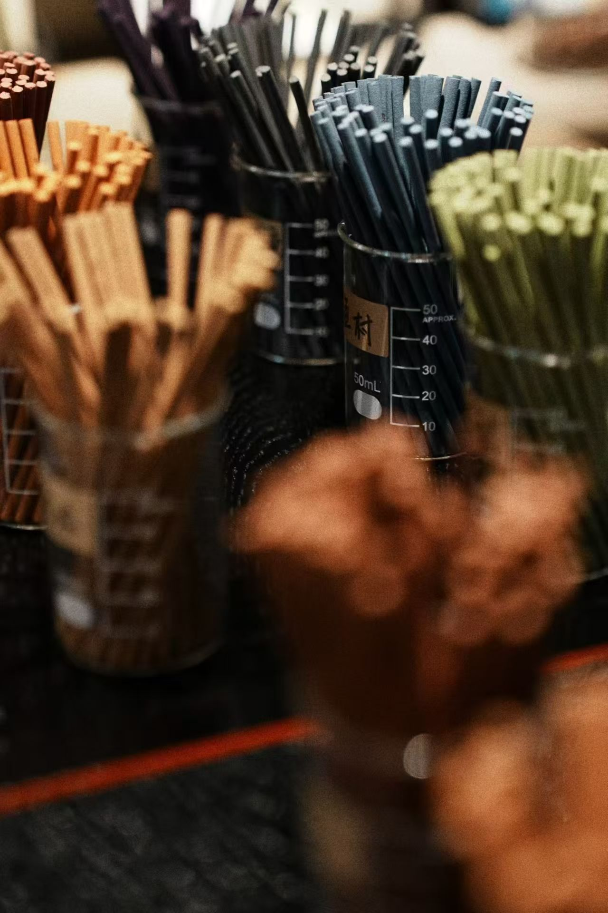

少城风物指南
《少城风物指南》是布里斯湾最重要的内容资产。32页不同类目纸质信息页，放在店后门口，用户可以自己组合装订。在大数据时代，一本纸质指南本身就是"慢下来"的宣言。
覆盖少城片区的店铺、历史、美食、建筑、人物。不是"布里斯湾的宣传册"，是"少城的独立编辑物"——这个第三方视角的编辑姿态，反而让布里斯湾获得了最大的信任。
① 信任建立——"他们不是在推销自己，是在认真记录这片街区" ② 流量入口——用户在028C园区/合作店铺拿到指南→按图索骥找到布里斯湾 ③ 内容IP——可以持续更新、可以独立出版
D&DEPARTMENT的"d design travel"系列——每本以一个地区为主题，从当地人的视角推荐。少城风物指南就是d design travel的成都·少城版。这是布里斯湾最具长期价值的内容资产。
在大数据时代，抛开算法推荐，用纸质载体记录一个街区——这件事本身就是"慢"的最强证明。
74